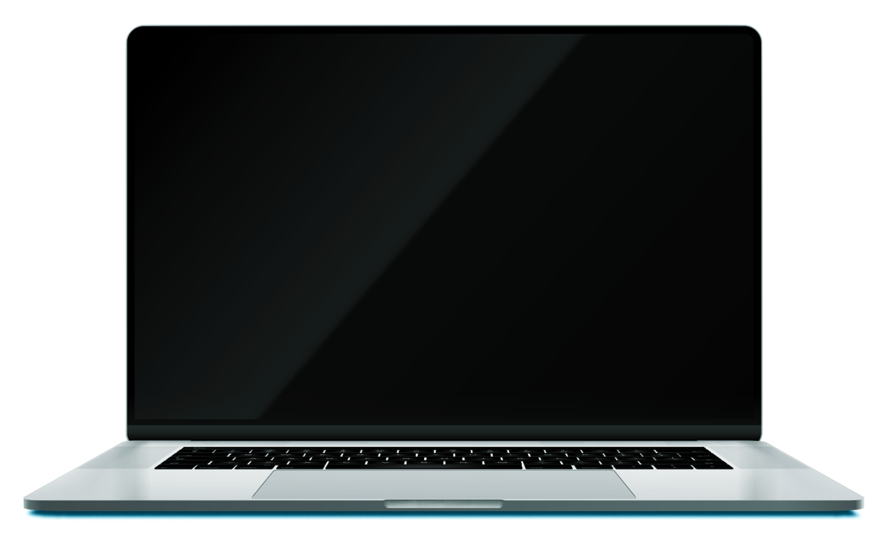

07
Slide com texto + laptop em movimento
Insira aqui um subtítulo, se necessário
Massa de texto, consectetuer am adipisc elit, seimt nonum nibh morq euismod tincidunt ut lore laoreet sit dolore.

Inserir Imagem (Preenchimento)
Ut wisi enim adminim veniam, quisnos exerci tation ullamcorper suscip eborp lobortis nislut utea commod. Use a versão bold para destaque